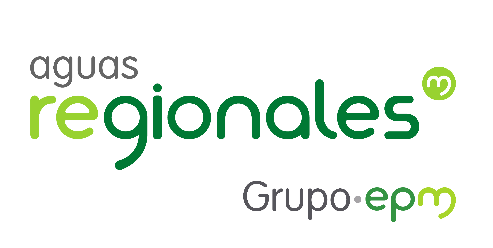

A continuación puedes consultar información acerca de mi experiencia profesional:

Cargo: Profesional de proyectos de infraestructura.
Aguas Regionales EPM S.A. E.S.P.
Noviembre de 2021 - Actualidad
Subregión de Urabá, Antioquia, Colombia
- Funciones:
- Elaborar plan general o programa proyectos de obras de expansión, reposición, ampliación, modernización y optimización de la infraestructura asociadas a los sistemas de acueducto y saneamiento básico con base en los planes de inversión aprobados y teniendo en cuenta los procedimientos y normas establecidas para ello.
- Definir presupuestos, requerimientos y especificaciones asociadas a las actividades a contratar durante el desarrollo de los proyectos de infraestructura de Acueducto y Saneamiento básico.
- Elaborar o revisar diseños de obras de infraestructura asociados a los proyectos de expansión, reposición, ampliación o modernización de los Sistemas de acueducto y saneamiento básico, incluido los diseños presentados para la vinculación de urbanizadores.
- Realizar control y seguimiento a los proyectos de infraestructura de Acueducto y saneamiento básico para evaluar el avance, identificar o ejecutar ajustes y asegurar el cumplimiento del objeto del proyecto.
- Recibir la obra en juntamente con el responsable del proceso de Operación teniendo en cuenta los procedimientos y normas para recibo, entrega de obras a operación y puesta en funcionamiento.
- Elaborar informe final y cierre del proyecto, así como recopilar, organizar y disponer la información de este.
- Participar y coordinar cuando se requiera, en los diferentes comités o mecanismos de interrelación internos y externos relacionados con el proyecto de Infraestructura de Acueducto y Saneamiento básico.
- Definir e implementar acciones de monitoreo, control, disminución, corrección y compensación de impactos ambientales durante el desarrollo de proyectos de obra.
- Definir e implementar programas y acciones sociales de prevención, mitigación. control, corrección y compensación por los impactos negativos y potenciación de los positivos generados durante el desarrollo de proyectos de obra.
- Ejecutar las actividades de información y concertación con administraciones municipales, entidades públicas, privadas y comunidades durante la prestación de los servicios de acueducto y saneamiento.
- Participar y apoyar la investigación de nuevos métodos, actividades, insumos, equipos y tecnologías para la ejecución de proyectos.
Cargo: Profesional Ambiental Interventor .
INGETEC S.A. - INGENIEROS & CONSULTORES
Proyecto: : Interventoría durante la construcción de las obras civiles y montaje de los equipos electromecánicos, pruebas y puesta en operación del Proyecto Hidroeléctrico Ituango.
Febrero de 2021 a noviembre de 2021.
Campamento Tacuí - Cuní, El Valle - municipio de Toledo, Antioquia.
- Funciones:
- Ejecutar actividades de seguimiento e inspección en campo de las obras y actividades relacionadas con la gestión ambiental, asociados al Plan de Manejo Ambiental, conforme a la normativa vigente.
- Apoyar las actividades de elaboración y/o revisión de las respuestas a solicitudes o peticiones de los Contratistas relacionados con la Gestión Ambiental, conforme a la normativa vigente.
- Participar en la planeación, programación, ejecución y control de planes, programas y/o procesos relacionados con la Gestión Ambiental.
- Ejecutar actividades de revisión de los reportes y análisis de la información de los aforos de las fuentes superficiales realizados por los Contratistas y la Interventoría, para el control y seguimiento permanente de las fuentes hídricas asociadas al proyecto, dentro de la gestión eficiente del recurso hídrico.
- Cumplir con lo establecido en los procesos y procedimientos del Sistema de Gestión de Seguridad y Salud en el trabajo y Medio Ambiente.
- Desarrollar actividades y apoyo para el aforo permanente de las fuentes hídricas.
- Establecer junto con el equipo de Gestión Ambiental solicitudes y requerimientos de manejo ambiental que orienten a los Contratistas en el uso eficiente del recurso hídrico y el control de la contaminación.
- Desarrollar visitas técnicas con relación al manejo de los recursos hídricos del proyecto.
- Elaborar y presentar los informes diarios y semanales propios del ejercicio de su labor, requeridos por el área de la Gestión Integral, la Gerencia de la Interventoría y por el Cliente.
- Seguimiento y verificación de los planes y programas para el logro de las metas e indicadores establecidos en los Programas de Uso Eficiente y Ahorro del Agua, así mismo, en la presentación oportuna de los informes requeridos relacionados.
- Las demás que fueran asignadas de acuerdo con el área de desempeño y la naturaleza del empleo por el jefe inmediato.
Cargo: Auxiliar de ingeniería.
Proyecto: Interventoría para la instalación de las redes de alcantarillado sobre las cuencas Rodas, Piedras Blancas y El Salado.
Octubre de 2020 a febrero de 2021.
Municipio de Bello, Antioquia.
- Apoyo a la conciliación de actas y papeletas con el contratista, con el fin, de verificar que las cantidades y precios de cobro correspondan con lo ejecutado en campo y a los análisis de precios unitarios.
- Visitas de campo e inspección de obras tales como instalación de tubería de alcantarillado en vía pública, desvíos de acueducto, reconstrucción de andenes, pavimentación de vías públicas, recuperación de las zonas verdes intervenidas, construcción de cajas de registro en andenes, demolición, reconstrucción y/o adecuación de cámaras de inspección en vía pública, verificación del estado de los individuos arbóreos y jardines.
- Recopilar y asentar información de los reportes diarios generados en el desarrollo de las actividades en obra.
- Apoyo en la elaboración de presentaciones y actas de los comités internos y externos de obras y de interventoría con el Consorcio y EPM.
Cargo: Profesional de proyectos de infraestructura.
Aguas Regionales EPM S.A. E.S.P.
Proyecto: